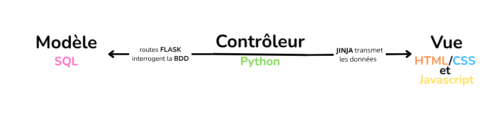
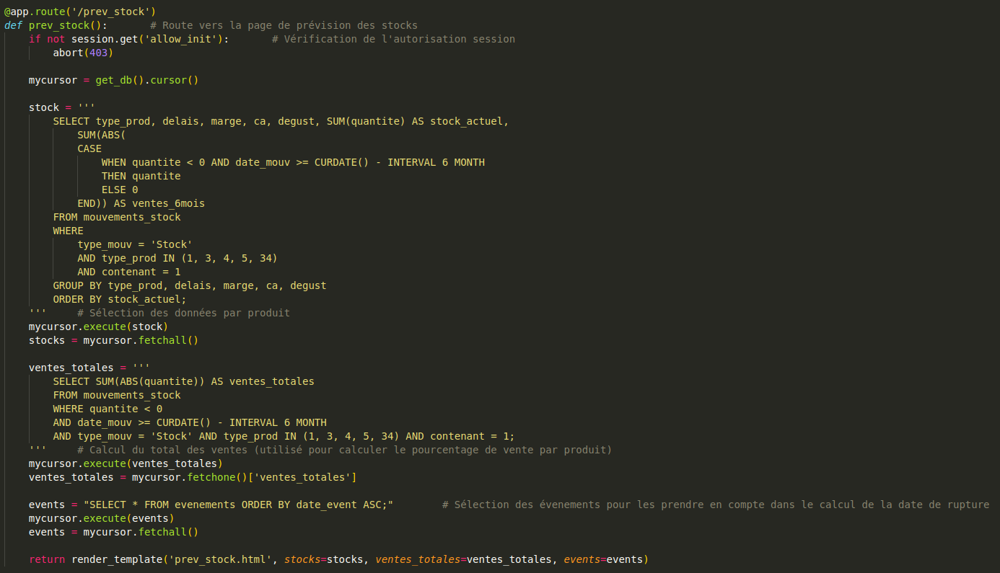

Ananda kombucha
COURVOISIER Mathis
Informatique BUT2
Stage : 7 avril - 28 juin

COURVOISIER Mathis
Informatique BUT2
Stage : 7 avril - 28 juin
Ce portfolio illustre la mise en œuvre des compétences du BUT Informatique à travers mon stage au sein de l'entreprise Ananda Kombucha. Seul en charge du projet, j’ai conçu et déployé une application web d’analyse de données ainsi qu’un nouveau site e-commerce. Ces missions m’ont permis d’appliquer concrètement les compétences de développement, de gestion de données, d’interaction avec un client et de déploiement d’une application.
Ananda Kombucha est une jeune entreprise artisanale spécialisée dans la fabrication et la vente de kombucha, une boisson fermentées sans alcool à base de thé. Elle distribue ses produits principalement à travers un réseau de points de vente en Franche-Comté, et occasionnellement lors de marchés, salons et événements locaux.
Gérée la plupart du temps par un seul entrepreneur, l’entreprise repose sur un fonctionnement simple mais qui atteint ses limites avec la croissance de l’activité. Elle a aujourd’hui besoin de renforcer ses outils informatiques pour mieux gérer ses ventes et son organisation.
Dans ce contexte, le stage porte sur deux axes principaux : la refonte du site web avec intégration d’une boutique en ligne, et la création d’un outil d’analyse et de visualisation des ventes pour faciliter le suivi et la prise de décision.
Refonte du site web avec intégration d'une boutique en ligne et création d'un outil d'analyse et de visualisation des ventes pour l'aide à la décision.
L’unité d’enseignement majoritairement sollicitée pour ce projet est la compétence 1 : Réaliser un développement d’application. Le développement complet de l’outil d’analyse, mené en autonomie, m’a conduit à répondre aux besoins de l'utilisateur. Des échanges réguliers ont permis d’affiner progressivement l’expression des besoins et d’adapter le développement au fur et à mesure de l’avancement du projet.
Étant donné que j'étais le seul développeur de l'application j'ai pu mettre à profit ma connaissance de plusieurs langages comme l'illustre le schéma de la structure de l'application ci-dessous.
Le fonctionnement par routes du framework Flask m'a permis d'adopter une approche fonctionnelle : j'ai développé les fonctionnalités de l'outil une par une et page par page pour pouvoir communiquer fréquemment l'avancée du projet à l'utilisateur et obtenir son retour après ses tests de l'application. Ainsi j'ai pu rédiger des routes similaires à celle ci-dessous pour chacune des fonctionnalités de l'application web, par exemple ici le calcul des stocks prévisionnels.
Le développement de l'outil d'analyse m'a permis de mettre en œuvre les enseignements de l'UE 4 sur la gestion de données. En effet l'application repose sur du traitement de données, on transforme des fichiers CSV en tables SQL pour les mettre en relation et les afficher dans des graphiques et des tableaux.